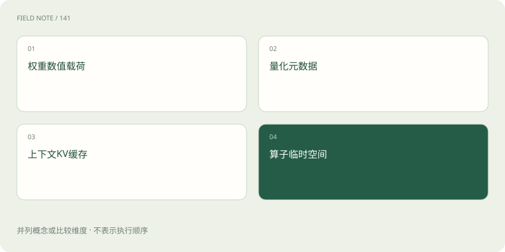
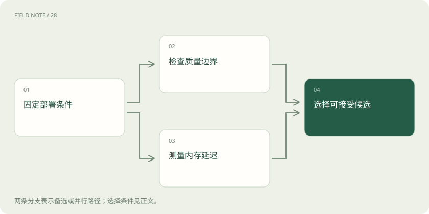

先读哪些知识
先用一个类比理解
类比只帮助建立直觉，不等同于技术的完整机制。
一图看懂
先定义压缩希望解决哪个约束
本站教学例子是一家离线维修助手团队，希望在现场设备上运行模型。可用内存有限，用户又要求短时间得到第一条建议。模型文件大小、加载后权重内存、运行峰值内存、首词延迟与持续生成速度是不同指标。压缩可能改善其中一项，却让另一项变差，必须先确定验收条件。
例如缩小权重后仍因长手册的缓存超限，说明只优化了静态部分。若设备没有适合低位算子的执行内核，较小文件也可能运行更慢。团队需要固定输入长度、输出长度、并发、设备与后端，再比较候选版本；否则不同测试条件会把部署差异伪装成压缩算法的收益。
PTQ 在训练完成后近似数值
训练后量化 PTQ 把已有权重或激活映射到较低精度表示，常通过标定数据估计范围或选择量化参数。它通常不需要完整重新训练，但仍需要计算与评估。位宽、分组大小、对称性和是否量化激活都会影响误差、元数据与执行方式，不能只写一个“四位”就认为方案描述完整。
维修助手的标定材料应覆盖数字阈值、专业缩写、长输入和拒答场景，而不能全是简短通用聊天。标定集代表性不足可能导致某些激活范围估计失真。PTQ 的便捷在于利用已有模型，边界在于误差容忍度依赖模型与任务；低位表示不会自动保留所有敏感判断能力。
QAT 让训练适应量化误差
量化感知训练 QAT 在训练过程中模拟或纳入量化影响，让模型有机会调整参数以适应目标低精度路径。它常比单纯 PTQ 需要更多训练数据与计算，也需要目标部署格式和内核支持。训练时的模拟表示与导出后的真实低位执行必须一致核查，不能仅凭训练完成就判断部署成功。
如果现场助手只在少量数字任务上退化，团队可以把 QAT 作为候选修复方向，但仍要检查其他能力是否被牺牲。它不是无损压缩证明，也不保证所有位宽都可恢复原精度。数据质量、训练目标与硬件支持共同决定效果，额外训练成本也应计入方案，而不能只比较最终文件大小。
图解：内存账本分开核对

GPTQ 与 AWQ 关注不同近似依据
GPTQ 是训练后权重量化方法，利用标定激活所反映的误差信息逐步量化并补偿权重误差。AWQ 则利用激活信息识别对输出重要的权重通道，并通过缩放等方式降低低位量化误差。二者都不能被概括成“把所有数直接四舍五入”，也不是更新业务知识的训练方法。
具体收益依赖实现、模型结构、标定样本、分组与推理内核。某仓库演示的加速不等于所有设备都会复现，论文条件也不能移植成本站跑分。选择时应检查输出格式是否被目标后端支持，以及是否需要转换或额外工作区。工具代码许可和下载权重的许可仍需分别核查，算法公开并不改变基础权重条件。
权重位宽与总内存不是同一公式
理想情况下，十亿个参数若从十六位降到四位，原始数值载荷从约二十亿字节降到五亿字节，即理论四倍缩减。实际还包含缩放因子、零点、对齐、未量化层、缓存、工作区和运行框架开销，因此不能把该比例直接当成整机内存或峰值显存降幅。这里是算术教学估算，不是实测结果。
维修助手若同时保留原始权重与量化副本，转换或加载峰值甚至可能高于稳定运行阶段。不同后端还可能对部分算子解量化执行。报告应分别列出文件、权重常驻、完整运行峰值与测试上下文条件，避免用最容易测到的文件大小替代用户真正关心的可运行性。
KV 量化针对随上下文增长的缓存
自回归生成常缓存已有词元的键和值，避免每步重算全部历史。KV 缓存随上下文长度、并发、层数、KV 头数和表示精度变化；分组查询注意力会改变其中的头数因素。权重量化后，这部分可能成为主要内存开销，因此缓存量化与权重量化需要分开讨论。
把 KV 降低精度可能扩大长上下文容量，但会引入缓存误差以及量化、反量化成本。现场助手需要在长手册中准确找回某个限制条件，缓存误差可能影响这种能力，平均短问答得分未必能发现。还要核查后端是否支持该模型的 KV 格式；理论节省量不能单独证明延迟改善。
剪枝与蒸馏改变的对象不同
剪枝移除权重、通道、头或层。非结构化稀疏可能保留原张量形状，若缺少稀疏内核与支持的模式，零值增多也未必加速；结构化剪枝更容易改变实际计算规模，却可能损失关键能力并需要恢复训练。压缩率必须同时说明结构和执行条件。
蒸馏让学生学习教师的输出、分布或中间行为，学生可以采用更小结构，因此有机会降低真实计算量。但学生能力受容量、数据覆盖和目标约束，不会自动继承教师全部知识。维修团队若只蒸馏常见故障，会丢失罕见风险边界；教师错误也可能进入学生。蒸馏与量化可以组合，但需要分别评估每一步造成的损失。
图解：压缩候选的验收路径

用质量约束筛选部署候选
最终评估应同时包含专业正确性、危险建议率、拒答适当性、长上下文检索、首词时间、生成速度和峰值内存。数字阈值错误的代价可能远高于措辞变化，不能让平均语言质量掩盖关键退化。先定义可接受质量边界，再在满足边界的候选中比较资源成本，结论才具有实际意义。
若四位候选更省内存却在目标硬件上更慢，团队可以保留较高位宽、改变批量或选更小学生，而不是坚持压缩率最大者。所有结果都要记录模型、格式、内核、设备和输入条件。本站只解释机制与权衡，不声称进行了真实训练或设备跑分；用户应据此审查证据，而不是把理论位宽当成采购承诺。
放在一起对比
| 选择 | 机制或收益 | 限制与核验 |
|---|---|---|
| PTQ | 训练后量化 | 标定与内核影响结果 |
| QAT | 训练适应量化误差 | 增加训练成本 |
| 剪枝 | 移除权重或结构 | 稀疏不保证加速 |
| 蒸馏 | 小模型学习教师行为 | 覆盖与容量限制迁移 |
放进真实场景
本站教学例子：维修助手的权重缩小后，长手册仍使 KV 缓存超限，因此下一项评估应针对缓存与上下文条件。
别踩这个误区
想一想
为何大量零权重不一定让推理更快？
若张量形状不变且后端仍执行稠密运算，零值不会自动减少算子工作量，还可能增加管理成本。
关联阅读
资料与边界
本文为原创知识讲解。类比和图示经过简化；示例数字不代表实测或报价。整理日期：2026-11-05。文末列出对应技术的原始资料，具体功能与版本支持请以原文为准。